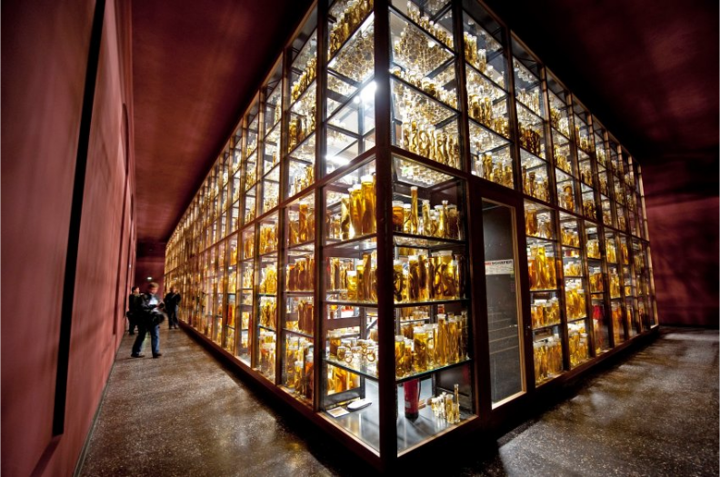
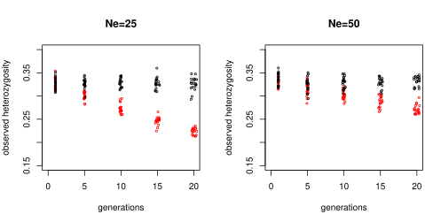
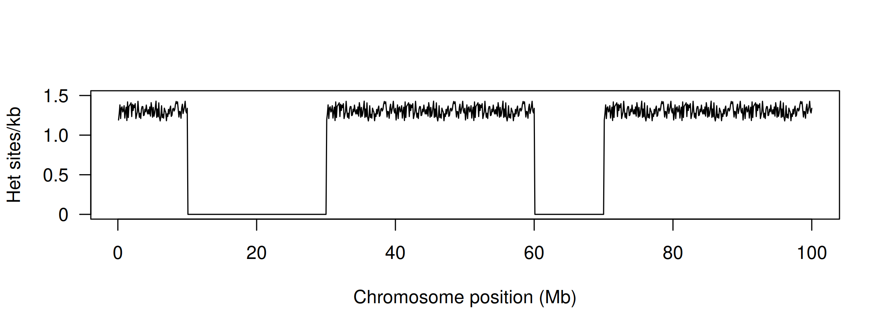
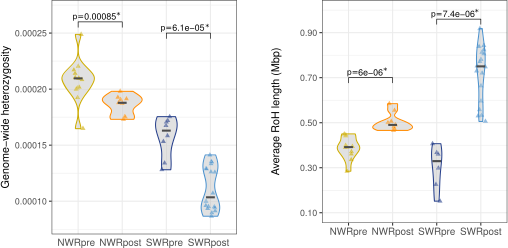
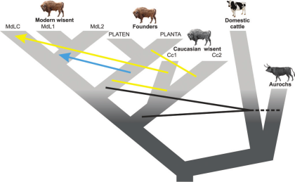

Ancient DNA II: Museum DNA
ENS-4404 Genetics and the Conservation of Small Populations
Dr Axel Barlow
email: a.barlow.@bangor.ac.uk
Museum samples in conservation genetics
How useful are museum samples?
- Convenient and ethical
- Rare and extinct species
- A genetic time machine
What are the challenges?
- DNA preservation
- Lab methods
- Sample metadata
- Timescale
Case studies
How useful are museum samples?

Convenient and ethical
Less admin burden
- No landowner permission
- No live sampling
- Generally exempt from Nagoya protocol
Ethical
- No disturbance
- No injury
Convenient
- Reduce fieldwork cost
- Reduce carbon footprint
_at_Göteborgs_Naturhistoriska_Museum_8581.jpg)
Rare, extinct, or difficult to sample species

Rare, extinct, or difficult to sample species

Rare, extinct, or difficult to sample species

A genetic time machine

A genetic time machine

What are the challenges?
Sample types
Methods are less advanced for museum than for ancient samples
Bone/teeth
- Probably most reliable and predictable
Skin/pelt/feathers
- Typically treated with unknown chemical mixture
- Potentially cross contamination within museum
Wet collection
- May be formalin fixed
- Stored in an alcohol, type/concentration often unknown
DNA properties
DNA yield

DNA yield

DNA fragmentation

DNA extraction method

DNA content

Sample metadata


.jpg)
Timescale

Timescale: genetic diversity

Timescale: population divergence

Case studies
Zimbabwe rinkhals
- Small spitting cobra
- Allopatric Zimbabwe population
- Currently Hemachatus haemachatus
- "Small cobra" known since 1920's
- First specimen identified in 1960's
- Last seen in 1988
- Handful of museum specimens
- Formalin fixed stored in alcohol
- Mitochondrial capture

Zimbabwe rinkhals

Zimbabwe rinkhals

Zimbabwe rinkhals
White rhinos
- Two subspecies: northern and southern
- ~20,000 southern white rhinos (in 2015)
- Northern white rhino functionally extinct (2 females left in 2018)

.jpg)

Runs of homozygosity (ROH)
- Chromosome regions are identical by descent
- Can be calculated from pedigrees
- Genome sequencing allows identification of runs of homozygosity (ROH)

Runs of homozygosity (ROH)
- Total inbreeding = ROH content or FROH
- Recent = long ROH
- Older = short ROH

White rhinos

White rhinos
Wisent (European bison)
- Lowland wisent B. b. bonasus
- Caucasian wisent B. b. caucasicus
- Last wild animal shot in 1927
- Captive population:
- ~11 lowland
- 1 Caucasian
- Breeding programme
- L line "pure"
- LC line mixed
- Genome sequencing:
- 2 lowland founders
- 2 Caucasian
- Modern L and LC

Genome map

Wisent admixture

Museum samples in conservation genetics
- A convenient and ethical option
- Unique opportunity to sample the past
- Issues with sample preservation and metadata
- Issues with timescale
- Lab methods still need refinement
Can be a very effective and useful tool in conservation genetics!
Thanks all! :)